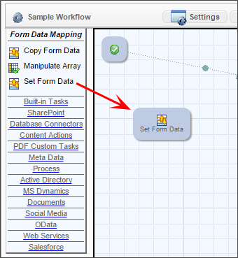

Custom Tasks already exist for many common functions such as:
A workflow Custom Task can be added to a workflow definition just like a built-in task type. The workflow custom task cannot have any user participants; they run and then immediately transition to the next step in the workflow without any user intervention. They are configured similar to standard task types are must exist in the path/route of the workflow to be executed.
To use a custom task in a workflow definition, expand the appropriate group in the task toolbar.
Then click on the custom task icon and drop it on to the palette. This now acts like any other workflow step and should be added to the path/route by drawing the connectors to it.

After a custom task is placed on the workflow palette you can configure it. Most custom tasks will require some configuration, but it is not required. To configure the custom task right click on the step and choose the Properties menu item, or double click on the icon.

This will display a dialog that prompts for a Form to reference. Most custom tasks will require this configuration, indicating which Form definition will be routed in this workflow. The dialog will display different information depending on which task is being configured. Click the “Configure” button to display additional options.


Workflow Custom Tasks will appear in the workflow toolbar automatically when they are installed in the Content List. The name of the folder containing the custom tasks is the same as the name of the group in the workflow.

To locate where a workflow Custom Task is installed in the Content List, open the workflow builder and then turn on debugging mode by right clicking anywhere in the menu bar area of the Process Director screen. A message box will appear, informing you that Debug Mode has been activated. Only users that are in the admin user group will be able to do this.

Next, refresh the workflow builder by clicking on the Refresh icon located in the upper right portion of the screen.

In debugging mode, additional information will appear for every folder and file, such us their GUID’s.